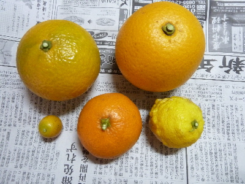
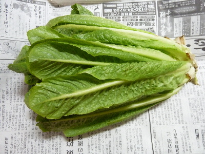
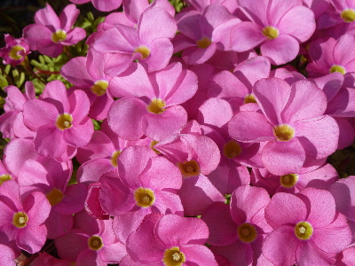
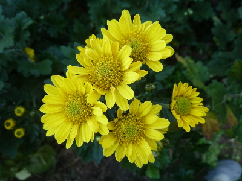

遊びで植物を育てよう
2016/12/31
お正月用に柑橘を収穫しました。
家庭で収穫出来て、色々食べれるのは嬉しいです。

お正月にのんびり食べようと思います。
お菓子系を食べるよりも、フルーツ食べた方が健康的で良さそうですよね。
【ページTOP】 【12月TOP】
【園芸TOP】
2016/12/31
白菜みたいなレタスが巻かなくなって良かった。
寒くなったせいでしょうか？白菜みたいなレタスの葉が巻かなくなりました。

正直 うれしい。
巻いてた頃は中に虫がいっぱい入って、食べ散らかされて汚かったです。
虫の巣になっていました。
バラバラにして洗うのも楽ちんです。
レタスはサニーレタス系の方が管理が楽でいいかな。
【ページTOP】 【12月TOP】
【園芸TOP】
2016/12/18
冬って意外と花が多いです。
雪が降ってないからですかね。
花が色々咲いてます。


雑草も青々としてたりします。
毎年こんなもんなんですよね。
なんかイメージで、冬といえば草は枯れて寒々しいって思ってしまいます。
【ページTOP】 【12月TOP】
【園芸TOP】
過去の日記
【2015年12月の日記】
【2014年12月の日記】
【2013年12月の日記】
【ページTOP】
【12月TOP】
【園芸TOP】
畑仕事じゃないよ。
【おいしいものを食べよう。】【たくさん寝よう。】
【ソロ活をしよう!】【季節感のあることをしよう。】【動画視聴はほどほどに。】【当サイトの全てのコンテンツは無断転載禁止です。】